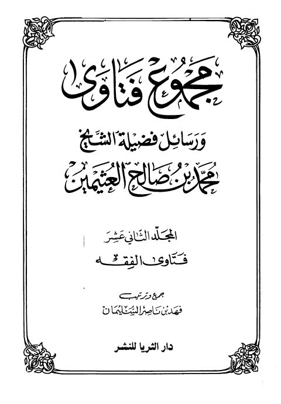

Downloads need an internet connection.
مجموع فتاوى ورسائل فضيلة الشيخ محمد بن صالح العثيمين- فتاوى الفقه
Authors: محمد بن صالح العثيمين
Editors: فهد بن ناصر بن إبراهيم السليمان
Publishers: دار الثريا للنشر
**▫️ العنوان: مجموع فتاوى ورسائل فضيلة الشيخ محمد بن صالح العثيمين- فتاوى الفقه** ▪️ المؤلف: #محمد_بن_صالح_العثيمين ▫️ المحقق: #فهد_ناصر_إبراهيم_السليمان ▪️ الناشر: #دار_الثريا_للنشر ▫️ تاريخ النشر: 1419هـ 1998م ▪️ بلد النشر: الرياض، #السعودية ▫️ الطبعة: 1 ▪️ عدد الأجزاء: مج12 ▫️ الصفحات: 529 ▪️ نوع الوعاء: #كتاب ▫️ التصنيف الرئيسي: #الفقه_وأصوله ۪